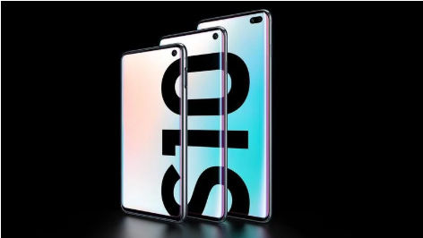
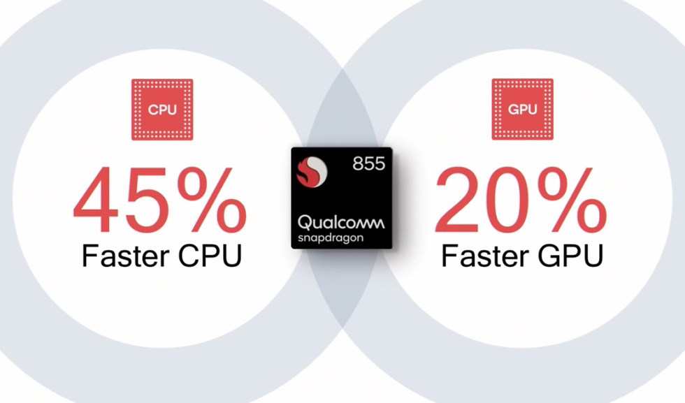
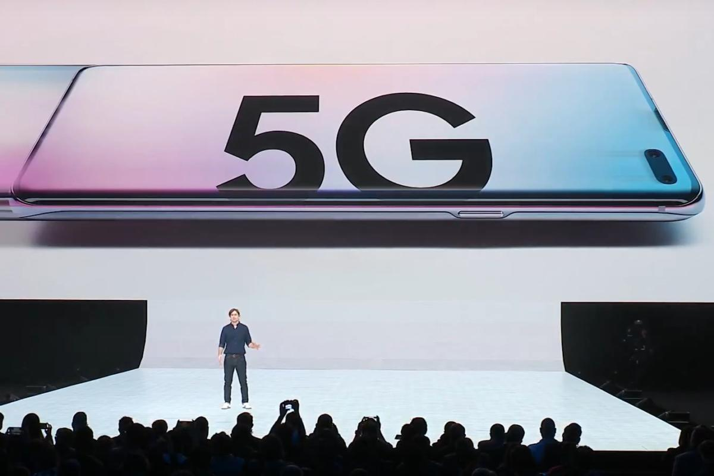
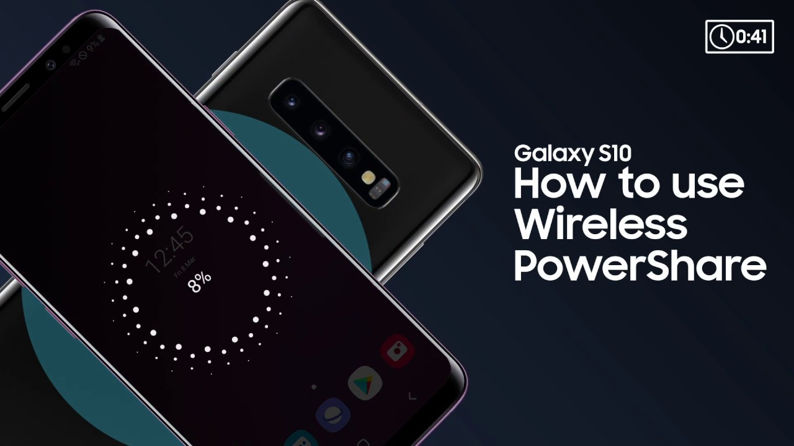

<div class="container midContainer">
  <div class="Content3"> 
       <div class="row">
             <div class="col-md-12">
                 <div class="text-center bottom15px"><h1 class="font-bold bottom25px">Samsung Galaxy S10, Provide 8 new features</h1></div>
             </div>
         </div>
       <div class="row  bottom25px" style="background-color:#fff;padding-top:20px;">
                       <div class="col-md-12 desktop-padding" style="padding: 15px 25px 15px 25px;">
              <div class="career-description bottom25px" style="color: black;">
                      
                      <p></p><p><strong>Teknologi.id -&nbsp;</strong><a href="https://teknologi.id/global/reviews/galaxy-fold-folding-samsung/">Galaxy Fold</a>, is not the only gadget awaited at the Samsung Galaxy Unpacked Event 2019. Samsung also announced the successor of the S-series, the Galaxy S10. In terms of design and technological innovation, the Galaxy S10 is the result of a breakdown from S9. This is because the Galaxy S9, which was released last year, has received a lot of criticism because it is considered not to bring a lot of innovation. Then what innovations or new features are present in the Galaxy S10?</p><p>1.&nbsp;Infinity-O</p><p></p><p>The First Hole Camera The new Galaxy S10 screen has the designation "Infinity-O" because it is really full-screen. But there is still a notch that loads the front camera. The Infinity-O design on the S10 is actually not the first to be brought by Samsung. But it has been found in previous generations, namely the Galaxy A8s and A9 Pro. But keep in mind, the two series are only specifically marketed in China and South Korea. So, globally, the Galaxy S10 officially became the first to carry the screen with a camera hole. Previously, both in the Galaxy A9 Pro and Galaxy A8s, the camera hole was located in the upper left corner. While in the regular Galaxy S10e and S10 series, the camera holes are located in the upper right corner. Especially for the Galaxy S10 Plus, the hole is rather elongated because there is a dual-camera for a more perfect selfie experience.</p><p>2. In-Display Fingerprint Scanner</p><p>&nbsp;</p><p>Samsung is indeed not the first vendor to adopt a fingerprint scanner technology on the screen. However, they use scanners that are different from those of other vendors. Samsung uses ultrasonic technology which is claimed to be safer and faster by detecting the user's pulse. Interestingly, the fingerprint scanner sensor on this screen can function even if the phone is in sleep mode. So, users don't need to first turn on the cellphone to unlock the screen. However, the process of opening the screen from sleep mode is not instant. The screen will first turn on gradually scanning the user's fingerprint. Debut this ultrasonic fingerprint sensor at the same time marks the end of the iris scanner that has been attached to the Galaxy S. series &nbsp;</p><p>3. 4K Front Camera Recording</p><p>In addition to increasing the number of cameras, Samsung also improved its supporting features. Both the back and front cameras of the Galaxy S10 support 4K video recording. Especially for the front camera, this feature is the first. The Galaxy S10 is also the first mobile device that supports HDR10 + video recording. The video will offer an attractive multimedia experience, one of which provides a higher video dynamic range.</p><p>4. Snapdragon 855</p><p>&nbsp;</p><p>Following in the footsteps of its predecessors who always relied on the latest chipset. The Galaxy S10 is also loaded with the latest Snapdragon 855 chipset. This chipset consists of 8 64-bit cores which are claimed to have 45% better performance than Snapdragon 845. However, usually, only certain countries get this processor allotment. Some countries, including South East Asia, usually get the Exynos version. But, the Exynos chipset used is also the latest output, the Exynos 9820.</p><p>5. 5G Connectivity</p><p>&nbsp;</p><p>For the first time, Samsung spawned three variants of the Galaxy S series, which previously only consisted of two variants. But not only three, Samsung adds another variant with a special edition 5G label. Thus, Samsung is legitimately one of the first wave of cellphone vendors to release 5G phones commercially. 5G technology on the Galaxy S10 is more utilized to support the augmented reality (AR) feature. Galaxy S10 5G is the most premium variant among the four. The screen is 6.7 inches diagonal, slightly larger than the Galaxy S10 Plus which has a 6.4-inch screen span. The storage configuration is 8 GB RAM and 256 GB internal memory.</p><p>6.&nbsp;Wireless Power Share</p><p>&nbsp;</p><p>This is one of the most innovative features of the S10 series. You can share batteries with other electronic devices such as cellphones and smartwatches wirelessly without the need for any connectors. How to use it is also very easy, you just need to bring objects closer to the S10 back.</p><p>7. WiFi 6</p><p>&nbsp;</p><p>Samsung indeed released Galaxy S0 with 5G connectivity. But because the distribution of new connectivity is limited in some countries, certainly not all users will get the sophisticated connectivity experience offered by 5G. But that is not a problem, because the Galaxy S10 has been supported by WiFi 6 (IEEE 802.11ax). WiFi 6 is a new generation in WiFi connectivity that offers speeds of up to 20 percent faster than S9. WiFi is also claiming to be more reliable in a crowded room, such as a gym, airport, or concert area because it is claiming be 4 times faster.</p><p>8. RAM Mencapai 12GB</p><p>Although jumbo RAM capacity is still a controversy in some circles, Samsung doesn't seem to budge. In fact, Samsung not only offers large RAM up to 12 GB, but also up to 1 terabyte of internal memory.You can start to order Galaxy S10 Today! Friday (2/22/2019). The lowest prices offered are from USD 800 - USD 1800&nbsp;<strong>(FM)</strong></p><p><em>Source by: teknologi.id</em></p><p></p>
              </div>
          </div>
       </div>   
  </div>    
</div>